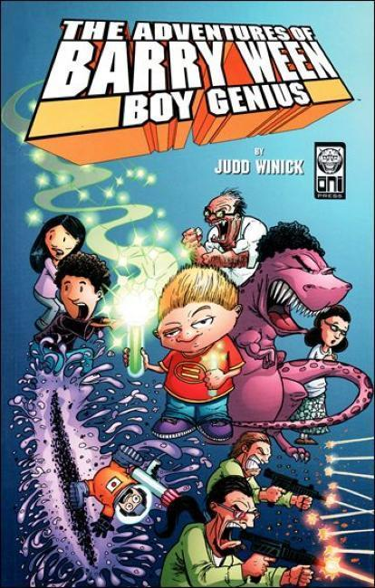
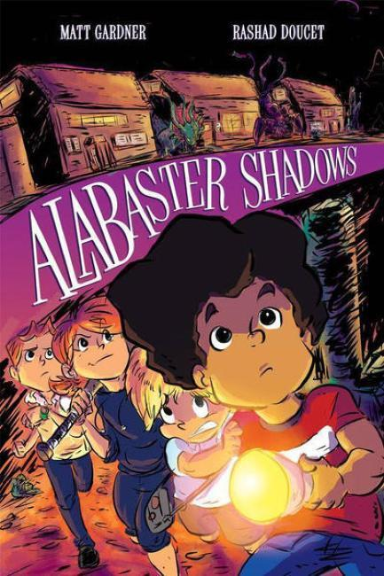
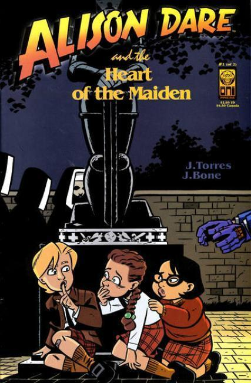
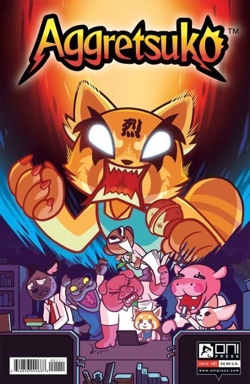
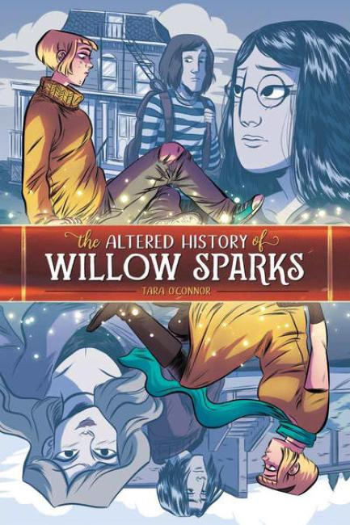
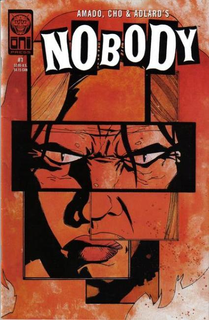
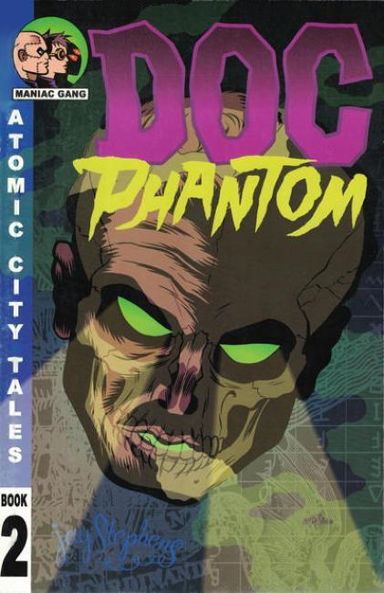
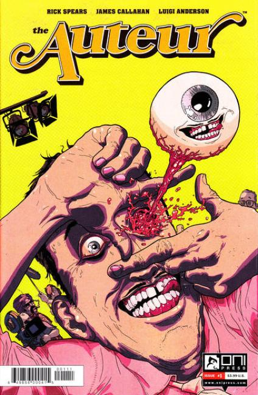
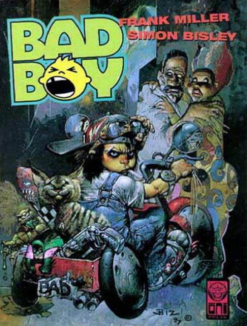

×









❮
❯
Oni Press is an American independent comic book and graphic novel publisher based in Portland, Oregon, founded in 1997 by Bob Schreck and Joe Nozemack with the goal of publishing comics and graphic novels they would want to read. Unsatisfied with the material that was dominating the industry, they believed firmly that sequential art could be used to tell virtually any story.
Schreck left the company in 1999, and Oni Press is currently owned by Nozemack, James Lucas Jones, and Charlie Chu.The company name derives from oni, the Japanese word for the ogre demons popular in Japanese folklore.
Titles
Adventures of Barry Ween, Boy Genius (1999)
Aggretsuko (2020)
Alabaster Shadows (2015)
Alison Dare (2002)
Altered History of Willow Sparks (2018)
Amado, Cho & Adlard's Nobody (1998)
Apocalipstix (2008)
Atomic City Tales (2002)
Auteur (2014)
Awakening (2004)
Bad Boy (1999)
Bad Ideas by Jim Mahfood, Wayne Chinsang and Dave Crosland
Bad Medicine by Christina Weir, Nunzio DeFilippis, and Christopher Mitten
Black Metal by Rick Spear and Chuck BB
Blair Witch Chronicles by Jen Van Meter and Guy Davis
Blue Monday by Chynna Clugston
Borrowed Time by Neal Shaffer and Joe Infurnari
Breakfast After Noon by Andi Watson
Bunker by Josh Fialkov and Joe Infurnari
Capote in Kansas by Ande Parks and Chris Samnee
Cheat by Christine Norrie
Clerks. by Kevin Smith
Closer by Antony Johnston and Mike Norton
Coffin by Phil Hester and Mike Huddleston
Courtney Crumrin by Ted Naifeh
Crogan's Vengeance by Chris Schweizer
Crogan's March by Chris Schweizer
Crogan's Loyalty by Chris Schweizer
Cut my Hair by Jamie S Rich
Damned by Cullen Bunn and Brian Hurtt
Days Like This by J. Torres and Scott Chantler
Dead Goombas by J. Torres and Andy B.
Deep Sleeper by Phil Hester and Mike Huddleston
Dumped by Andi Watson
F-Stop by Antony Johnston and Matthew Loux
Fortune and Glory by Brian Michael Bendis
Frenemy of the State by Rashida Jones, Nunzio DeFilippis and Christina Weir
Frumpy the Clown by Judd Winick
Geisha by Andi Watson
Grrl Scouts by Jim Mahfood
Guerillas by Brahm Revel
Hopeless Savages by Jen Van Meter
Hysteria by Mike Hawthorne
Invader Zim by Jhonen Vasquez
Jason and the Argobots by J Torres and Mike Norton
Jay and Silent Bob by Kevin Smith and Duncan Fegredo
Jingle Belle by Paul Dini
Julius by Antony Johnston and Brett Weldele
Kaijumax by Zander Cannon
Killer Princesses by Gail Simone and Lea Hernandez
Kim Reaper by Sarah Graley[6]
Kissing Chaos by Arthur Dela Cruz
Last Exit Before Toll by Neal Shaffer and Chris Mitten
Leading Man by B. Clay Moore and Jeremy Haun
Letter 44 by Charles Soule and Alberto Jimenez Alburquerque
Local by Brian Wood and Ryan Kelly
Long Haul by Antony Johnston and Eduardo Barreto
Lost at Sea by Bryan Lee O'Malley
Love As A Foreign Language by J. Torres and Eric Kim
Love Fights by Andi Watson
Madman by Mike Allred
Maintenance by Jim Massey and Robbi Rodriguez
Maria's Wedding by Nunzio DeFilippis, Christina Weir and Jose Garibaldi
Marquis by Guy Davis
Midnight Mover by Gary Phillips, Jeremy Love and Jeff Wasson
Mutant, Texas: Tales of Sheriff Ida Red by Paul Dini and J Bone
My Inner Bimbo by Sam Kieth
Nocturnals by Dan Brereton
No Dead Time by Brian McLachlan and Tom Williams
Northwest Passage by Scott Chantler
North World by Lars Brown
Oddville by Jay Stephens
Off Road by Sean Murphy
Ojo by Sam Kieth
Once in a Blue Moon by Nunzio DeFilippis and Christina Weir
One Bad Day by Steve Rolston
One Plus One by Neal Shaffer and Daniel Krall
Oni Double Feature
PENG by Corey Lewis
Play Ball by Christina Weir and Nunzio DeFilippis
Polly and the Pirates by Ted Naifeh
Pounded by Brian Wood and Steve Rolston
Princess Ugg by Ted Naifeh
Puffed by John Layman and Dave Crosland
Queen & Country by Greg Rucka and various
Resurrection by Marc Guggenheim and David Dumeer
Rick and Morty by Justin Roiland and Dan Harmon
Scandalous by J Torres and Scott Chantler
Scooter Girl by Chynna Clugston
Scott Pilgrim by Bryan Lee O'Malley
Secret History of D.B. Cooper by Brian Churilla
Sharknife by Corey Lewis
Shenanigans by Ian Shaughnessy and Mike Holmes
Shot Callerz by Gary Phillips and Brett Weldele
Sidekicks by J. Torres and Takeshi Miyazawa
SideScrollers by Matthew Loux
Sixth Gun by Cullen Bunn and Brian Hurtt[8][9]
Skinwalker by Nunzio DeFilippis, Christina Weir and Brian Hurtt
Soulwind by Scott Morse
Space Battle Lunchtime by Natalie Riess
Spaghetti Western by Scott Morse
Spell Checkers by Joëlle Jones, Jamie S. Rich & Nico Hitori de
Spooked by Antony Johnston and Sophie Campbell
Stumptown by Greg Rucka and Matthew Southworth
Strangetown by Chynna Clugston and Ian Shaughnessy
Super Pro K.O.! by Jarrett Williams
Tales of Ordinary Madness by Malcolm Bourne and Mike Allred
Tek Jansen (Stephen Colbert's Tek Jansen Adventures) by John Layman, Tom Peyer and Jim Massey
Three Days in Europe by Antony Johnston and Mike Hawthorne
Three Strikes by Nunzio DeFilippis, Christina Weir and Brian Hurtt
The Tomb by Nunzio DeFilippis, Christina Weir and Chris Mitten
Union Station by Ande Parks and Eduardo Barreto
Visitations by Scott Morse
Volcanic Revolver by Scott Morse
Wasteland by Antony Johnston and Christopher Mitten
Wet Moon by Sophie Campbell
Whiteout by Greg Rucka and Steve Lieber
Whiteout: Melt by Greg Rucka and Steve Lieber


{kind=link}
{kind=link}
{kind=link}
{kind=link}
{kind=link}
{kind=link}
{kind=link}
{kind=link}
{kind=link}
{kind=link}